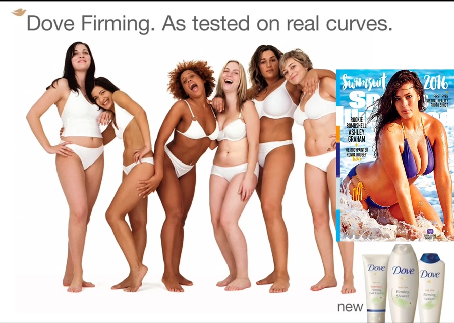
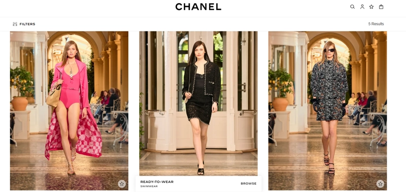
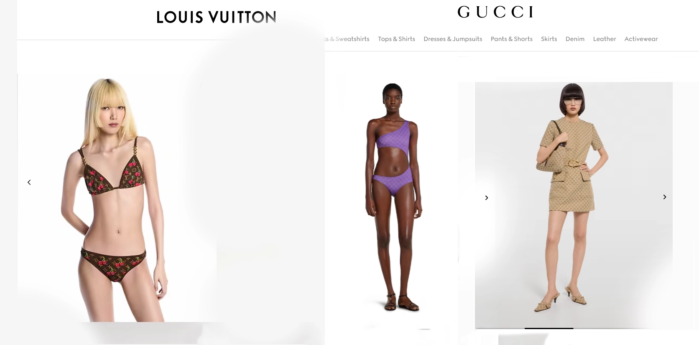
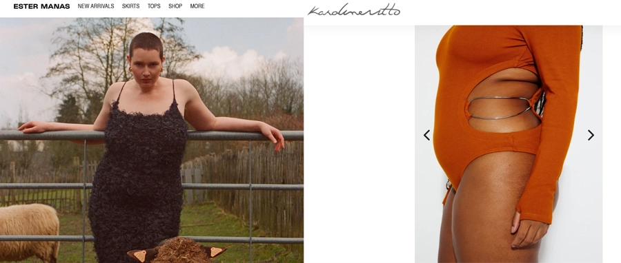

Picture this: Fashion Week 2026, the lights go down, and the runway is once again dominated by impossibly slim silhouettes. Thin is back — and it’s wearing last season’s body-positivity slogans like the coolest shrug.
Welcome to the ultimate beauty battlefield of 2026, where beauty standards vs body positivity isn’t just a debate — it’s big business.
The 2010s gave us the body-positivity boom: Dove’s real-women ads, Ashley Graham on Sports Illustrated, plus-size models storming high fashion. Suddenly “every body is beautiful” was marketing gold. Fast-forward to 2026 and the pendulum has swung hard the other way.
According to the latest Vogue Business Spring/Summer 2026 size-inclusivity report, a staggering 97.1% of runway looks were straight-size (US 0–4). Plus-size? Just 0.9%. Mid-size? A tiny 2%. The data proves it: thinness is back on catwalks, fueled by Ozempic buzz, Y2K nostalgia and that old-school “effortless elegance” craving.
What Fashion Brands Are Betting On in 2026
Mass-market giants like Aerie, Dove and Savage X Fenty are still all-in on body positivity in fashion. Why? Because 67% of American women wear size 16+, and they vote with their wallets. Show real bodies, get real engagement, sell more inclusive sizing. It’s smart commerce, not just feel-good marketing.

High-street brands play both sides: one season “real women” in the same jeans, the next — sample-size perfection on the runway. The reason is simple. Body positivity feels warm and fuzzy, but skinny still sells aspiration — that “if I buy this, I’ll look like her” magic.
Ordinary People as Models: New Standard or Temporary Trend?
Remember lockdown-era street casting? Your neighbour-next-door types, zero glam squads, pure relatability. It exploded sales and felt fresh.
In 2026 it’s still around… but mostly for mid-tier campaigns or viral drops. High fashion still craves polished pros who make clothes sing. Agencies report fewer calls for sizes 16+ and more for “mid-size at best”. Verdict? More limited-edition trend than permanent revolution.
Luxury Brands’ Beauty Priorities: Aspiration Over Accessibility
Chanel, Louis Vuitton, Gucci? They play a totally different game. Their priority isn’t inclusivity — it’s heritage, craftsmanship and unattainable cool. Diversity here often means more skin tones, ages or gender-fluid energy… but bodies? Still mostly lean and long.
Why? Luxury sells fantasy. A size-0 model in a €10,000 gown whispers “exclusive club”. That said, trailblazers like Karoline Vitto and Ester Manas are proving you can do couture-level chic on any body — and still look insanely expensive.
How Beauty Standards 2026 Affect Photography & Retouching
Gone are the plastic-perfect airbrushed days. 2026 campaigns crave natural yet sophisticated skin, candid laughs and soft curves styled elegantly. You see freckles, laugh lines, real texture — but everything still looks next-level.
Here’s where human retouchers become absolute magicians. AI can erase a blemish in seconds, but it often leaves skin looking flat and soulless. A skilled human retoucher works like a makeup artist with pixels:
- Gently balances lighting so eyes sparkle
- Softens texture without erasing pores
- Defines a waist just enough to flatter (never fake)
- Keeps every unique quirk that makes you you
It’s the delicate art of subtraction and enhancement — turning “nice photo” into “I want that exact vibe”. That’s the real value of human work in fashion photography today.
The Smartest Strategy for 2026
The winning brands aren’t picking sides in the beauty standards vs body positivity war. They’re blending both: aspirational images that celebrate real bodies, campaigns that make you feel seen and inspired. Because the most powerful trend isn’t a body type — it’s confidence.
FAQ
What are the main beauty standards in 2026?
Ultra-slim silhouettes are dominating runways (97.1% straight-size), but mass-market brands still celebrate curves and realness.
Is body positivity dead in fashion?
Not at all — it’s just evolved. Strong in commercial campaigns, weaker on high-fashion runways.
Are ordinary people still used as models?
Yes, but mostly in mid-tier and viral campaigns. High fashion prefers professionals.
Do luxury brands care about body diversity?
Some do (Karoline Vitto, Ester Manas), but most still prioritise aspiration and heritage over full inclusivity.
Why is natural retouching so important now?
Consumers can spot heavy filters instantly. Human retouchers create believable, sophisticated beauty that feels authentic.
Have you heard about the evolution of mannequins and how they have changed with the development of fashion?
There is an article about this here
Request Edit →